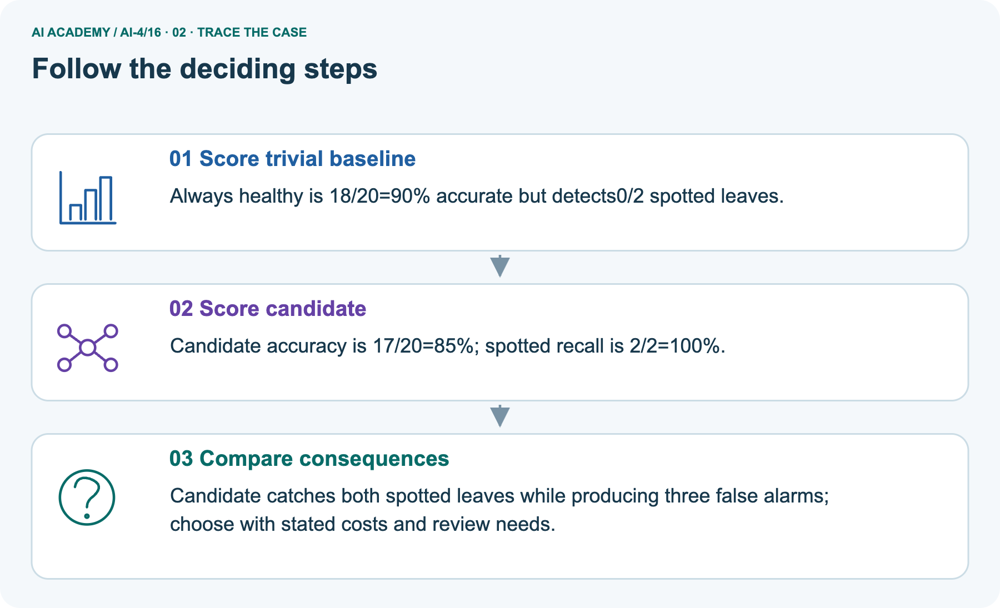
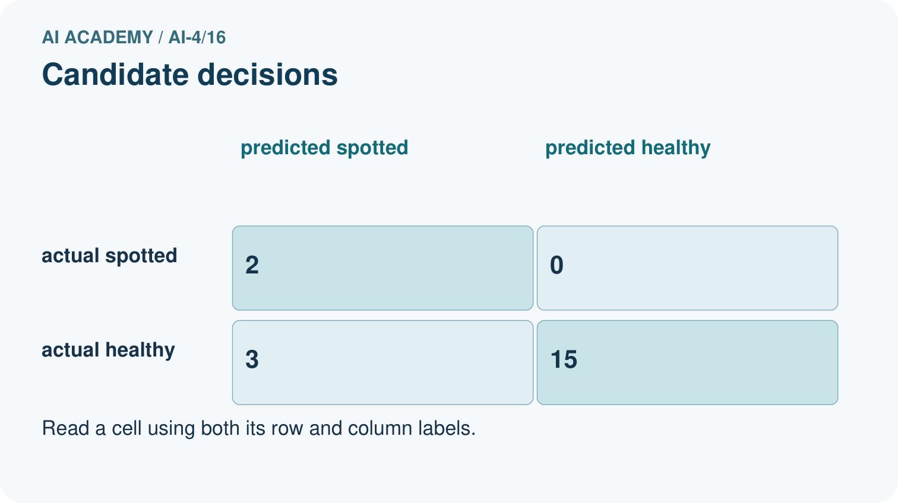
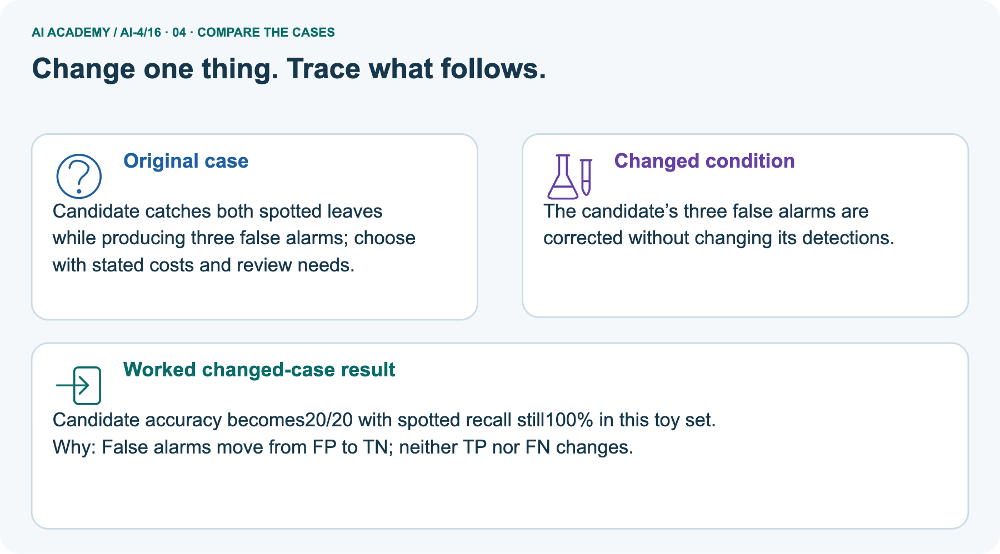
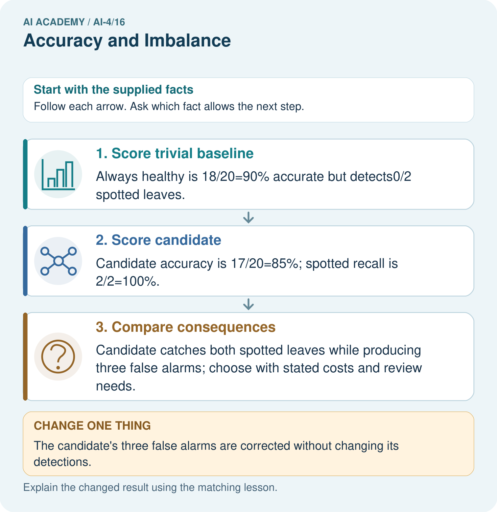
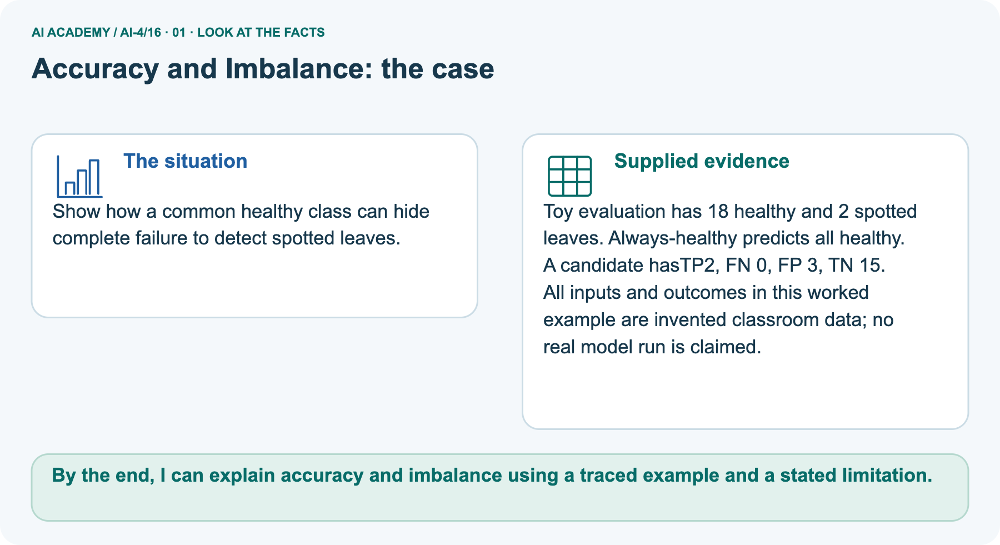
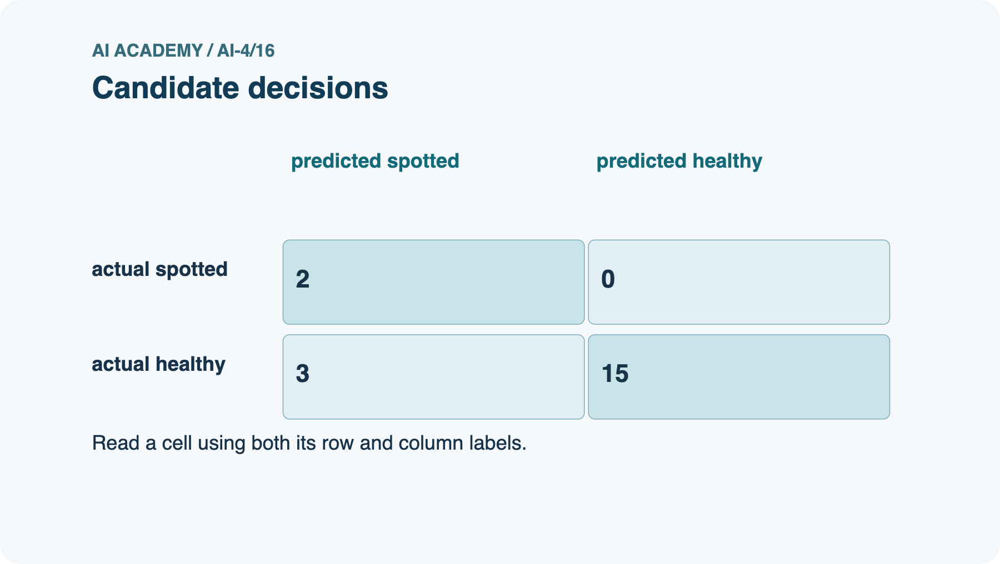
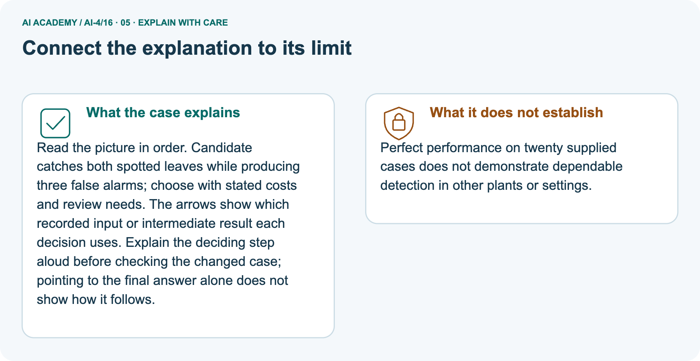

AI Academy · Level 4 · Grade 9 · Week 16 · Student lesson
Accuracy and Imbalance
Learn to understand, design, build, test and explain AI systems responsibly.
Project: Responsible Plant Classifier
THE CONNECTED WEEK
Keep the class counts. Show the missed cases. State the priority.
Compare ordinary accuracy, equal-class summaries and error consequences under explicit evidence.
Keep one habit: Complete matrices → class fractions → pictured18/2contrast → supplied mix/cost simulation → independent100-case comparison.
Main lesson · Section 1
Which class does the headline accuracy hide?
Report the class counts and error pattern before choosing a metric.
Learning goals
I can explain why overall accuracy can hide failure on a less common class.
I can compare a training-majority baseline with class-specific results.
I can calculate an equal-class average and report its limits alongside the confusion matrix.
Retrieve labelled confusion-matrix reasoning
Close your notes first. A rough first answer helps us choose the right starting point; it is not a score for your ability.
Without opening the old lesson, explain one key idea from Confusion Matrix. Give an example and a mistake that the idea helps you avoid.
Without opening the old lesson, explain one key idea from Train a Classifier. Give an example and a mistake that the idea helps you avoid.
Without opening the old lesson, explain one key idea from Baselines First. Give an example and a mistake that the idea helps you avoid.
With reference rows and prediction columns ordered clear then blocked, where are false negatives when blocked is positive?
End goal
By the end, I can explain accuracy and imbalance using a traced example and a stated limitation.
Earlier wording, alternatives and picture transcripts
Your learning target
Remember before reading
After trying, check the relevant lesson or ask your teacher. Change the part of your explanation that the evidence shows was wrong.
Accuracy can be dominated by a common class and hide failure on a rare but important class.

LEARNING TARGET Model A is always healthy on 96 healthy and 4 spotted leaves. Model B finds 3 spotted but falsely flags 5 healthy. Compare accuracy and spotted detection.
Builder name and experiment date:
Readiness for the connected explanation
This week’s end goal
Main lesson · Section 2
Compare two methods on the same imbalanced evaluation set
The baseline constant comes from training, not evaluation labels.
Accuracy and fictional source contract
Accuracy counts all correct predictions and divides by all evaluated examples. Each example has equal weight, so a common class contributes more to the score. A high result can hide failure on a rare class.
This week keeps the confusion matrix visible and checks both classes separately.
New fictional training data has 16 clear and 4 blocked labels. Its majority baseline predicts clear for every query; choose that rule from training, not evaluation labels.
A separate evaluation set also contains 16 clear and 4 blocked cases. A frozen candidate and the baseline are evaluated on the same 20 records.
Complete baseline/candidate matrices
| Method and reference row | Predicted clear | Predicted blocked |
|---|---|---|
| Baseline reference clear | 16 | 0 |
| Baseline reference blocked | 4 | 0 |
| Candidate reference clear | 12 | 4 |
| Candidate reference blocked | 0 | 4 |
Read both80%totals and different errors
Rows are references and columns are predictions, ordered clear then blocked. Blocked is positive. Both methods get 16/20=80 percent accuracy. The baseline misses all four blocked cases.
The candidate finds all four but falsely flags four clear cases. The same score conceals a different tradeoff.
Earlier wording, alternatives and picture transcripts
PICTURE ENTRY
Notice → Predict → Explain
Begin with visible evidence; do not explain more than the picture and information support.
MYSTERY The team must use accuracy and imbalance to solve a model-building problem. What information do they have? What important evidence is still missing?
Name three visible details without interpreting them.
Predict the data, model, or evaluation decision being made.
Identify one hidden assumption that could change the result.
State what evidence would confirm or reject your prediction.
My prediction and supporting evidence:
A closer explanation
Main lesson · Section 3
Give each class a visible denominator
Ordinary accuracy weights cases; balanced accuracy averages the two class recalls equally.
Complete ordinary/balanced score script
def scores(counts):
clear_n = sum(counts[0])
blocked_n = sum(counts[1])
if clear_n == 0 or blocked_n == 0:
raise ValueError("Need evaluation examples of both classes")
correct = counts[0][0] + counts[1][1]
accuracy = correct / (clear_n + blocked_n)
clear_fraction = counts[0][0] / clear_n
blocked_fraction = counts[1][1] / blocked_n
balanced = (clear_fraction + blocked_fraction) / 2
return accuracy, balanced
baseline = [[16, 0], [4, 0]]
candidate = [[12, 4], [0, 4]]
for name, counts in [("baseline", baseline), ("candidate", candidate)]:
accuracy, balanced = scores(counts)
print(name, round(100 * accuracy, 1), round(100 * balanced, 1))Trace candidate fractions and equal average
The output is baseline 80.0 50.0, then candidate 80.0 87.5. In each output line the first percentage is ordinary accuracy and the second is balanced accuracy.
For the candidate, the clear-class correct fraction is 12/16=75 percent and the blocked-class fraction is 4/4=100 percent. Their equal average is 87.5 percent.
Trace baseline fractions and absent-class policy
For the baseline, those fractions are 16/16=100 percent and 0/4=0 percent, averaging 50 percent. The code assumes a two-by-two table of nonnegative integer counts in the stated order.
It stops when either reference class is absent. Then report the observed counts and the unavailable class result; do not invent a denominator or silently substitute zero.
Earlier wording, alternatives and picture transcripts
ML MECHANISM
Input → Model → Evidence
Trace the information, fitted behavior, and evaluation proof separately.


QUESTION Compare trivial accuracy with minority-class recall.
MODEL IDEA Accuracy can be dominated by a common class and hide failure on a rare but important class.
PROOF NEEDED Use an unseen case, visible calculation, error analysis, and a stated limitation.
UNDER THE HOOD Test set has 95 healthy and 5 diseased leaves. Always predicting healthy gives 95 ÷ 100 = 95% accuracy.
Draw a fresh data → model → prediction → evaluation trace:
A closer explanation
Connect the picture and the explanation
Point to the input, the deciding step and the result in this week’s visual. Explain the same step in ordinary words. A picture helps when you can say what each part represents.
Main lesson · Section 4
Compare a large majority score with rare-class detection
A metric can describe a tradeoff without deciding its consequences.
Four evaluation conditions

NORMAL Expected data and expected behavior.

Keep this boundary clear
BOUNDARY Value close to a threshold, ambiguous label, or uncertain prediction.

MISSING Necessary field, label, source, or measurement is unavailable.

SHIFTED New lighting, species, device, subgroup, or time condition.
Keep the claim bounded
RELEASE RULE Passing one case never proves generalization. Predefine expected behavior for all four categories.
Choose a revealing case
Which case most threatens today's claim, and why?
Predict the supplied changed case
Change: The candidate’s three false alarms are corrected without changing its detections.
Check after predicting
Prediction: Candidate accuracy becomes20/20 with spotted recall still100% in this toy set.
Reason: False alarms move from FP to TN; neither TP nor FN changes.
Earlier wording, alternatives and picture transcripts
EVALUATION DESIGN
Four Tests, Four Kinds of Evidence
A system is not understood until it survives more than one comfortable example.
NORMAL Expected data and expected behavior.
BOUNDARY Value close to a threshold, ambiguous label, or uncertain prediction.
MISSING Necessary field, label, source, or measurement is unavailable.
SHIFTED New lighting, species, device, subgroup, or time condition.
Change one thing in the pictured case
Main lesson · Section 6
Read the rare-class failures beside the full matrix
Use the picture’s own counts rather than the main corridor denominators.
Complete pictured facts and scope
Show how a common healthy class can hide complete failure to detect spotted leaves.
Toy evaluation has 18 healthy and 2 spotted leaves. Always-healthy predicts all healthy. A candidate hasTP2, FN 0, FP 3, TN 15.
All inputs and outcomes in this worked example are invented classroom data; no real model run is claimed.
Main corridor fixture has16clear/4blocked: baseline and candidate both16/20accuracy, but blocked recall0/4versus4/4. Main candidate false alarms4. Pictured leaf fixture instead has18healthy/2spotted: always-healthy18/20accuracy,0/2spotted detected; candidate TP2,FN0,FP3,TN15 gives17/20accuracy and2/2spotted recall.
A hypothetical review correcting all3false alarms gives20/20reviewed outcomes; preserve the original model-only17/20record. Neither two spotted examples nor a reviewed perfect score establish reliable unseen-case detection.
Trace accuracy, missed cases and false alarms



Read the picture one step at a time
Read the picture in order. Candidate catches both spotted leaves while producing three false alarms; choose with stated costs and review needs. The arrows show which recorded input or intermediate result each decision uses.
Explain the deciding step aloud before checking the changed case; pointing to the final answer alone does not show how it follows.
Inspect the pictured candidate’s labelled matrix



Predict correcting only the three false alarms
Change one thing: The candidate’s three false alarms are corrected without changing its detections. Predict the result before checking the explanation. What remains the same?
Check after predicting



State evidence and task limits
Perfect performance on twenty supplied cases does not demonstrate dependable detection in other plants or settings.
Read the labelled picture: Why can the 90% baseline still be unsuitable for a detection task? Point to the relevant step in the picture, then write the changed result and the rule or evidence that supports it.
Return to the main equal-accuracy comparison
Same overall score different class results
Balanced accuracy is a metric choice, not a repair to the classifier or a guarantee of safety. It gives classes equal influence in this summary; it does not encode the actual consequences of false alarms and missed cases.
Four blocked evaluation examples are also too few for a strong general claim.
Earlier wording, alternatives and picture transcripts
WORKED EVIDENCE
Reason Step by Step
Predict first. Then check each step. A correct answer without visible evidence cannot be audited.

STEP 1 Test set has 95 healthy and 5 diseased leaves.
STEP 2 Always predicting healthy gives 95 ÷ 100 = 95% accuracy.
STEP 3 It finds 0 of 5 diseased leaves, so diseased recall = 0%.
STEP 4 Report class counts and recall; redesign data or use only where misses are acceptable.
CHECK Verify the denominator, unit, split, class definition, and data version before interpreting a score.
Recalculate, retrace, or restate the evidence independently:
A closer explanation
Learn from the worked case
Cover the result before checking it. Say what is given, choose the procedure, and follow one step at a time. Then uncover the result and explain your first mismatch. Ask why a step is allowed, not only what number it produces.
A pictorial worked case: Accuracy and Imbalance
The facts we will use



Why this result follows
What this example does not establish
Main lesson · Section 7
Find an overall score used as proof for every class
A summary metric changes what it emphasizes; it does not repair predictions.
Diagnose the main claim
Diagnose one cause and name the cleanest next experiment:
CLAIM TO CHALLENGE A classifier with 95% accuracy is excellent in every practical situation.
Explain the interpretation and limits
Compare methods on the same appropriate evaluation examples and report the training-derived baseline. Include ordinary accuracy, each class denominator, false positives and false negatives.
An equal-class summary adds information but cannot choose the acceptable tradeoff for the task. Keep development decisions separate from a final test.
A result of 4/4 correct blocked cases is 100 percent on those four examples, not proof of perfect future detection. If the evaluated set contains no blocked cases, it cannot measure blocked-case performance at all.
Next week separates precision and recall by asking which denominator answers each question.
Earlier wording, alternatives and picture transcripts
ERROR DETECTIVE
Compare → Diagnose → Repair
Do not patch the answer. Find the earliest unsupported assumption, data problem, or experiment error.

| Evidence record | Expected | Actual | Likely cause / next test |
|---|---|---|---|
| normal case | passes | ||
| boundary case | defined behavior | ||
| missing case | safe fallback | ||
| shifted case | measured limit |
A closer explanation
Main lesson · Section 8
Practise both class fractions and a changed class mix
Do not treat an arithmetic population example as a measured distribution-shift result.
Try W2 from the complete matrices
Use workbook W2 for the connected example “Accuracy and class imbalance”. First fill the input and rule boxes. Try the middle steps before asking for a hint. After a hint, try the next step yourself.
| Plan | Do | Check |
|---|---|---|
| What is given? Which rule or procedure applies? | Record each intermediate step. | Does the result follow? What remains unknown? |
Explain your trace to a partner. Your partner points to one step to check. Swap roles on the next case. Each person writes their own explanation.
Trace the separate8clear/8blocked illustration
Consider a separate illustrative set with 8 clear and 8 blocked cases. Suppose the same within-class fractions hold: the baseline matrix is [[8,0],[8,0]] and the candidate matrix is [[6,2],[0,8]].
Ordinary accuracy is now 50 percent versus 87.5 percent. Balanced accuracy remains 50 percent versus 87.5 percent. The class mix changed the overall score even though the within-class fractions stayed fixed.
This is an arithmetic comparison, not proof that a real classifier keeps the same behavior after a population change. Report sample size, class counts, full matrix and how the evaluation data was chosen.
Do not remove inconvenient cases or duplicate rare evaluation cases just to improve a headline number. If training is resampled, keep that separate from evaluation and document it.
Challenge high-score-means-both-classes reasoning
Use the worked case for Accuracy and class imbalance. Proposed explanation: “High accuracy means both classes work well”. Decide whether this explanation is supported.
Point to the step or supplied fact that decides; explain your repair if needed.
Answer on your own before discussion. If you are unsure, say which step you need help with.
Explain the pictured detection failure
Why can the 90% baseline still be unsuitable for a detection task? Point to the relevant step in the picture, then write the changed result and the rule or evidence that supports it.
Reserve the new100-case task
This is supported practice. Keep the separately named independent case for an attempt before feedback.
Earlier wording, alternatives and picture transcripts
ML STUDIO
Specify Before You Run
A trustworthy result can be reproduced from the recorded data, code, settings, and evaluation rule.

Experiment record
QUESTION + intended use + success threshold
DATA version + grouped split + leakage check
CODE/preprocessing + features + model + settings + seed
METRICS + positive class + units + denominators
PREDICTIONS + errors + subgroup slices + limitations
HUMAN reviewer + release, revise, limit, or stop decision
Write the minimum record needed to reproduce today's result:
A closer explanation
Practise with less help: Compare both class fractions
Check your reasoning
Explain the picture
Main lesson · Section 9
Run a complete imbalance and consequence comparison
The task supplies every matrix and both cost policies.
Complete main and changed-mix matrices
| Complete matrix fixture, clear/blocked axes | Baseline | Candidate |
|---|---|---|
| Main16clear/4blocked | [[16,0],[4,0]] | [[12,4],[0,4]] |
| Changed class mix8clear/8blocked,within-class fractions held equal by construction | [[8,0],[8,0]] | [[6,2],[0,8]] |
| Ordinary accuracy, changed mix | 8/16=50% | 14/16=87.5% |
| Balanced accuracy, both constructed mixes | (1+0)/2=50% | (0.75+1)/2=87.5% |
Two explicit fictional cost policies
| Declared fictional classroom cost policy | Main baseline FN4/FP0 | Main candidate FN0/FP4 |
|---|---|---|
| Policy A: missed blocked costs5points;false alarm1point | 4×5=20points | 4×1=4points |
| Policy B: missed blocked costs1point;false alarm6points | 4×1=4points | 4×6=24points |
| Meaning | Different declared priorities can change which toy error pattern is preferred. | These arbitrary points are supplied for arithmetic, not measured real-world harms or an authorized deployment decision. |
Normal, sparse, absent-class and changed-mix probes
| Complete score probe | Expected bounded check |
|---|---|
| Normal main candidate [[12,4],[0,4]] | Ordinary80%;balanced87.5%;FP4,FN0. |
| Boundary rare class has one case: [[3,1],[1,0]] | Ordinary3/5=60%;class recalls3/4and0/1;balanced37.5%,very sparse positive evidence. |
| Missing positive class: [[4,0],[0,0]] | Observed ordinary accuracy4/4, but no blocked recall or two-class balanced result under this lesson’s policy; original scores function stops. |
| Changed class mix supplied above | Ordinary accuracy changes with class proportions; held-fixed class fractions keep balanced accuracy unchanged by construction, not as a promised real model behavior. |
Calculate, compare and state the policy
Imbalance Simulation: calculate ordinary accuracy, both class recalls and their equal average for the complete main matrices. List every kind of error before applying the two predeclared cost policies. Then repeat the arithmetic for the supplied8/8class-mix fixture, keeping the constructed within-class behavior explicit.
Use the original complete Python scores program for nonempty-class matrices; record its absent-class stop honestly. Do not duplicate evaluation cases or change denominators to improve a score. Keep the independent90healthy/10spotted comparison for an uncoached first attempt.
Retain evidence and execution status
| Case | Prediction | Actual | Calculation / evidence | Meaning / next test |
|---|---|---|---|---|
| Normal | ||||
| Boundary | ||||
| Missing | ||||
| Shifted |
Before trying: what do I expect, and why? While trying: which step could first go wrong? Afterwards: what did I actually observe, and what should change? Keep “not run” if you only traced the procedure.
Earlier wording, alternatives and picture transcripts
EVIDENCE LAB
Predict → Run → Calculate → Interpret
Keep the test conditions fixed, record every result, and change only one planned factor.

1. Write the hypothesis and expected evidence before running.
2. Imbalance Simulation: compare majority prediction with a model using accuracy, recall, and the actual error costs.
3. Run one normal, one boundary, one missing, and one shifted case.
4. Calculate the metric from raw counts or row-level errors.
5. Interpret what changed, what did not, and what remains unsafe or unknown.
Plan → try → check
Main lesson · Section 14
Try alone: compare accuracy with spotted detection on fresh counts
Show both denominators and state the false-alarm tradeoff.
Complete selected counts and scope
Validation has90 healthy and10 spotted cases. Always-healthy predicts all healthy. Another model has TP7,FN3,FP8,TN82. Compare accuracy and spotted recall.
This selected task has90healthy/10spotted and its own candidate TP7,FN3,FP8,TN82. Use spotted as the declared positive class and retain these100cases as the denominator. No actual consequence weights or broad reliability evidence are supplied; give conditional reasoning rather than declaring a universally best model. Do not substitute the20-case main or pictured matrices.
First attempt and support record
Attempt this case before feedback. Record any help. Earlier examples below are further practice; a case already practised with feedback cannot establish fresh transfer.
Your teacher has the independent answer and scoring criteria. Complete the matching workbook week to keep your practice evidence together.
Use feedback after trying
Attempt the independent case before hints. Record whether you worked alone, used a hint or followed a model. After feedback, fix the first unsupported step and explain why it changed.
A later check uses a changed case, not a copied answer.
Earlier wording, alternatives and picture transcripts
Independent case: Changed independent case
Week 16 Independent application
Close the worked explanation. Apply the idea to this different question without copying.
A classifier predicts healthy for all 100 plants; 95 are healthy and 5 diseased. Compute accuracy and diseased recall.
My answer, with a trace, calculation or supporting evidence
Create and test
Change one relevant detail. Predict the result before testing. Include a boundary or missing-information case when it helps reveal a limit.
My changed input and expected result
Connect to your project
Check Plant Classifier class balance and select metrics that keep the spotted-leaf class visible.
The evidence I will keep
Transfer practice from the original programme
Model A is always healthy on 96 healthy and 4 spotted leaves. Model B finds 3 spotted but falsely flags 5 healthy. Compare accuracy and spotted detection.
Use feedback to improve
Main lesson · Section 11
Keep the rare class visible in the project record
A higher chosen metric alone cannot justify a use decision.
Project artifact and evidence
THIS WEEK'S CHECKPOINT Check Plant Classifier class balance and select metrics that keep the spotted-leaf class visible.
Keep class counts, training-derived baseline, full evaluation matrix, ordinary accuracy, class-specific recalls and any balanced summary with denominators. State the declared consequences and review policy separately from the metric. Missing classes and tiny positive samples limit the evidence; if training is resampled, document it without altering the evaluation population or hiding mistakes.
For your Responsible Plant Classifier, save the input, procedure, observed result and limitation of this check.
Label this worked example as practice; use a different, previously unreviewed case when checking independent understanding.
Limits, uncertainty and human decision
Which requirement or risk does this artifact address?
Which dataset, split, code, and metric version does it use?
What normal and shifted cases were tested?
What remains uncertain or weak?
What decision still belongs to a teacher or qualified human?
RESPONSIBLE RELEASE Never use this classroom prototype for medical, pesticide, agricultural, or other consequential decisions.
My evidence-linked project decision:
Earlier wording, alternatives and picture transcripts
CUMULATIVE PROJECT
Responsible Plant Classifier
Every week adds one reviewable artifact to the same evidence-based capstone.

Evidence for your project
Main lesson · Section 16
Finish with a headline score and the failures behind it
Explain which denominator and consequence each conclusion uses.
Retrieve and explain
Close your notes. Explain this goal in your own words: Explain why overall accuracy can hide failure on a less common class
Plan a changed-case return
If you are unsure, return to the worked picture and explain one arrow. If you are ready, change an input or assumption and justify your prediction.
Save your workbook evidence. At the next review, try a different case before opening your old answer.
Reference bank and extra practice
Choose the reference that helps your next step.
Reference · Words for the current experiment
Reference · Section 5
Reference · Words for the current experiment
Tie each word to a particular input, fitted choice or evidence record.
Core vocabulary
| Term | Precise meaning | My ML example |
|---|---|---|
| accuracy | correct predictions divided by all predictions | |
| class imbalance | classes occur in very different amounts | |
| minority class | less frequent target class | |
| recall | fraction of actual positives found |
Closer-explanation terms
| Word | Meaning |
|---|---|
| Class imbalance | Unequal numbers of examples in different classes |
| Majority baseline | A rule that always predicts the most common training label |
| Class-specific correct fraction | Correct predictions for one reference class divided by the number of examples of that class |
| Balanced accuracy | The average of the class-specific correct fractions with equal weight for each class |
Earlier wording, alternatives and picture transcripts
VOCABULARY
Words You Can Calculate and Defend
A definition matters when it lets you interpret a new dataset, model, or result.


MISCONCEPTION TO REPAIR A classifier with 95% accuracy is excellent in every practical situation.
Repair the claim using a definition, calculation, or test record:
Words used in the closer explanation
Extra challenge · Build a stronger explanation
Reference · Section 10
Extra challenge · Build a stronger explanation
Choose the next useful challenge after the main route.
Thinking ladder
DEFINE Use all four terms precisely: accuracy, class imbalance, minority class, recall.
CALCULATE Reproduce the worked evidence with units and denominator.
TRACE Explain the data, code or decision path.
DIAGNOSE A classifier with 95% accuracy is excellent in every practical situation.
TRANSFER Solve a fresh dataset or model case.
IMPROVE Change one cause and rerun fixed evidence.
DEFEND State intended use, metric, limitation, and human responsibility.
MASTERY RULE A coached calculation becomes mastery only after a different case is completed independently.
Earlier wording, alternatives and picture transcripts
MASTERY
From Knowing the Word to Owning the Idea
Move upward only when you can produce evidence without copying the example.

Reference · Inspect your evidence
Reference · Section 12
Reference · Inspect your evidence
Use after practice; keep the selected fresh90healthy/10spotted comparison for the individual attempt.
Experiment evidence checklist
□ Define the task, feature/target roles, and intended-use boundary.
□ Show the calculation, code trace, or experiment record.
□ Test a normal case and one revealing boundary, missing, or shifted case.
□ Diagnose one failure without changing several factors at once.
□ Name a limitation, fairness concern, and the human-review action.
Independent evidence and defense:
My level: □ Not yet □ With one hint □ Independently □ I can teach and defend it
Earlier wording, alternatives and picture transcripts
INDEPENDENT PROOF
Explain • Calculate • Transfer • Defend
Complete this with a fresh case after guided practice and compare it with the mastery criteria.

REQUIRED PROOF Compare trivial accuracy with minority-class recall.
NEXT BRIDGE Carry the experiment evidence into: Precision and Recall.
Extra practice · Earlier complete case
Reference · Section 13
Extra practice · Earlier complete case
Attempt the question before opening its worked explanation.
Situation and question
A dataset has 95 healthy and 5 spotted. Model predicts healthy for all.
Calculate and critique accuracy.
Your explanation
Which detail supports the answer, and why does it matter?
Check after trying
95/100=95%, but spotted recall=0/5=0%. Majority performance hides the detection failure.
| Evidence or stage | Value or result |
|---|---|
| Healthy, predicted healthy | 95 |
| Spotted, predicted healthy | 5 |
Earlier wording, alternatives and picture transcripts
Week 16 Worked case
Use the supplied details to practise the weekly concept before attempting the independent question. This case extends the illustrated lesson.
The situation
The question
Worked explanation
Explain it in your own words
Trace the supplied case visually
The majority can hide a detection failure
A dataset has 95 healthy and 5 spotted. Model predicts healthy for all.
Calculate and critique accuracy.
95/100=95%, but spotted recall=0/5=0%. Majority performance hides the detection failure.
Reference · Earlier route checklist
Reference · Section 15
Reference · Earlier route checklist
Use one main route; revisit the checklist only when useful.
Checklist and first prediction
| By the end, I can | How I will show it |
|---|---|
| Explain why overall accuracy can hide failure on a less common class | Explain the deciding step, show a trace or test, and state one limit. |
| Compare a training-majority baseline with class-specific results | Explain the deciding step, show a trace or test, and state one limit. |
| Calculate an equal-class average and report its limits alongside the confusion matrix | Explain the deciding step, show a trace or test, and state one limit. |
Remember → watch and explain → try with help → investigate → try independently → keep project evidence. Your teacher may spread this lesson across several classes.
Keep your first prediction. Compare it with what the evidence shows and explain any change.
Earlier wording, alternatives and picture transcripts
Start with this question: Show how a common healthy class can hide complete failure to detect spotted leaves.
Extra practice · Predict, check and repair
Reference · Section 17
Extra practice · Predict, check and repair
Keep supported feedback separate from the reserved independent case.
First supported question and hint
Show how a common healthy class can hide complete failure to detect spotted leaves.
Which labelled step matches this detail? Candidate catches both spotted leaves while producing three false alarms; choose with stated costs and review needs.
1. Compare consequences
2. Score candidate
3. Score trivial baseline
Hint if needed: Read the steps in the pictorial case. Match the supplied detail to the stage that performs or records it.
Practice 1: explain the deciding evidence
Check the first explanation
After your attempt, compare with the supported explanation: Compare consequences Candidate catches both spotted leaves while producing three false alarms; choose with stated costs and review needs. Read the picture in order.
Candidate catches both spotted leaves while producing three false alarms; choose with stated costs and review needs. The arrows show which recorded input or intermediate result each decision uses.
Explain the deciding step aloud before checking the changed case; pointing to the final answer alone does not show how it follows.
Changed-case question and hint
Changed-case practice: The candidate’s three false alarms are corrected without changing its detections. Which conclusion is supported by the supplied facts?
1. Candidate accuracy becomes20/20 with spotted recall still100% in this toy set.
2. This one example guarantees correct results for every future input.
3. We can decide the result without examining the changed input or the procedure.
Hint if needed: Use the changed condition and the deciding step in the pictorial trace. The answer must say what follows from those facts.
Practice 2: explain the deciding evidence
Check the changed explanation
After your attempt, compare with the supported explanation: Candidate accuracy becomes20/20 with spotted recall still100% in this toy set. False alarms move from FP to TN; neither TP nor FN changes.
Repair and keep the record
Review Confusion Matrix (ai-4/15). Goal: Build a labelled confusion matrix from matched reference and prediction pairs. Short practice: Why is adding TP alone without reducing FN an incorrect revision?
Point to the relevant step in the picture, then write the changed result and the rule or evidence that supports it.. Return to this week and explain what you changed.
Review Train a Classifier (ai-4/13). Goal: Connect training-only scaling and neighbour prediction in one pipeline. Short practice: Which pipeline record would help another team reproduce the result?
Point to the relevant step in the picture, then write the changed result and the rule or evidence that supports it.. Return to this week and explain what you changed.
Review Baselines First (ai-4/10). Goal: Fit a majority label baseline using training labels only. Short practice: Can the candidate’s training accuracy replace this validation comparison?
Point to the relevant step in the picture, then write the changed result and the rule or evidence that supports it.. Return to this week and explain what you changed.
The browser lab lets you edit the supported Python examples already included in this lesson. Predict first, run, inspect the actual output or error, change one input, then run again.
Keep code, predictions, actual results and a reasoned revision together. On paper, label your result as a trace rather than an execution.
Use Download completed work in the hosted lesson to export your answers, reflections, practice feedback and code-run evidence. Open the HTML copy to read or print it.
Drafts stay in this browser when storage is available; clear drafts on a shared device.
Earlier wording, alternatives and picture transcripts
Use this supported practice once, in the browser or on paper. Keep the reserved independent assessment for a separate first attempt before teacher feedback.
Repair a missing building block
Predict, run and debug
Keep your completed work
Reference · The six-picture journey
Reference · Section 18
Reference · The six-picture journey
Choose the picture needed for the current question.
01. Accuracy and Imbalance: the case



Show how a common healthy class can hide complete failure to detect spotted leaves. Supplied facts: Toy evaluation has 18 healthy and 2 spotted leaves. Always-healthy predicts all healthy.
A candidate hasTP2, FN 0, FP 3, TN 15. All inputs and outcomes in this worked example are invented classroom data; no real model run is claimed.
Point to the given fact that matters most. Explain why it matters.
02. Follow the deciding steps
Score trivial baseline: Always healthy is 18/20=90% accurate but detects0/2 spotted leaves. → Score candidate: Candidate accuracy is 17/20=85%; spotted recall is 2/2=100%. → Compare consequences: Candidate catches both spotted leaves while producing three false alarms; choose with stated costs and review needs.
Point to each numbered stage and explain which recorded input it uses.
03. Candidate decisions



Candidate decisions. actual spotted: predicted spotted = 2, predicted healthy = 0. actual healthy: predicted spotted = 3, predicted healthy = 15.
Read the labels and values. Explain the relationship the model shows.
04. Change one thing. Trace what follows.
Original case: Candidate catches both spotted leaves while producing three false alarms; choose with stated costs and review needs.
Changed condition: The candidate’s three false alarms are corrected without changing its detections. Expected result: Candidate accuracy becomes20/20 with spotted recall still100% in this toy set.
Reason: False alarms move from FP to TN; neither TP nor FN changes.
Predict before checking the worked changed-case result. Name what changed and what the supplied facts allow you to conclude.
05. Connect the explanation to its limit



Read the picture in order. Candidate catches both spotted leaves while producing three false alarms; choose with stated costs and review needs. The arrows show which recorded input or intermediate result each decision uses.
Explain the deciding step aloud before checking the changed case; pointing to the final answer alone does not show how it follows.
Limit: Perfect performance on twenty supplied cases does not demonstrate dependable detection in other plants or settings.
Explain the case, then point to a limit on the claim.
06. Make the idea visible in your project


For your Responsible Plant Classifier, save the input, procedure, observed result and limitation of this check.
Label this worked example as practice; use a different, previously unreviewed case when checking independent understanding. Draw your input, deciding step, result and limit.
Supported question: Why can the 90% baseline still be unsuitable for a detection task? Point to the relevant step in the picture, then write the changed result and the rule or evidence that supports it.
Draw your project trace and justify the deciding step using evidence.